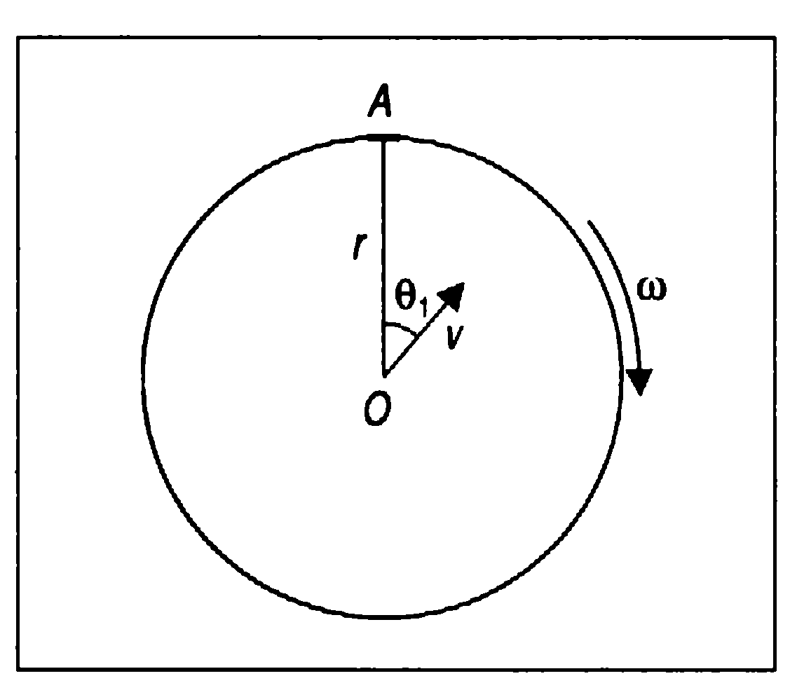

Задача 1. Фотоефект Лъчението на аргонов лазер е фокусирано в точка върху равнината на катод К на вакуумен фотоелемент (фиг. 1). Между плоския анод А и успоредния му катод К , разположени на разстояние d , се подава постоянно напрежение U (ускоряващо или
 Фиг. 1
Фиг. 1
задържащо). Върху анода се наблюдават кръгли петна от попадналите електрони. Отделителната работа на електроните в катода е А0 = 2 eV , а дължината на вълната на лазерното лъчение е $\lambda$ = 500 nm . Намерете: а) израз за радиуса R1 на петното от електрони върху анода при наличие на ускоряващо напрежение. Приемете, че движението на електроните се извършва с постоянно ускорение а . [4 т.] б) израз за радиуса R2 на петното от електрони върху анода при наличие на задържащо напрежение, получено при размяна на полюсите на източника. Границите на петното се определят от електроните, които достигат анода с нулева компонента на скоростта, перпендикулярна на равнината на анода. [4 т.] в) напрежението на източника, ако R1 /R2 = 2 . [2 т.] Полезни константи. Константа на Планк - h = 6,63.1034 J.s Елементарен заряд - q0 = 1,6.1019 C Скорост на светлината във вакуум - с = 3,0.108 m/s
1
Задача 2. Механично равновесие. Частица с маса m и електричен заряд q се движи по вертикален гладък изолиран обръч с радиус R (фиг. 2). В най-ниската част на обръча се намира неподвижно закрепено топче с електричен заряд q . Действието на силата на тежестта не се пренебрегва.
O R
$\psi$
m,q
Фиг. 2 а) Начертайте силите, която действат на частицата и напишете израз за всяка сила. [5 т.] б) Определете равновесните положения на частицата. [5 т.] Полезни тригонометрични равенства: ⎡$\pi$ ⎡$\pi$ ⎤ ⎤ sin 0 = 0 , cos 0 = 1 , sin ⎢ * $\alpha$ ⎥ = cos $\alpha$ , cos ⎢ * $\alpha$ ⎥ = sin $\alpha$ , sin 2$\alpha$ = 2 sin $\alpha$ cos $\alpha$ ⎣2 ⎣2 ⎦ ⎦ Задача 3. Движение по окръжност. Хоризонтална кръгова платформа с радиус r се върти с постоянна ъглова скорост $\omega$ около вертикална ос, минаваща през центъра ѝ. Върху платформата се намират стрелец с лък и мишена, в която той насочва стрела със скорост v спрямо лъка. Разгледайте следните два случая: а) Стрелецът се намира в центъра на платформата, а мишената в т. А от периферията на платформата (фиг. 3, поглед отгоре). Под какъв ъгъл $\theta_1$ спрямо отсечката ОА трябва да бъде изстреляна
 Фиг. 3
стрелата, за да попадне в мишената? [5 т.] б) Стрелецът и мишената сменят местата си - мишената се поставя в центъра, а стрелецът се намира в т. А. Под какъв ъгъл $\theta_2$ спрямо отсечката АО трябва да бъде насочена стрелата, за да попадне в мишената? [5 т.] Действието на силата на тежестта върху стрелата се пренебрегва.